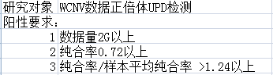

北京智因东方转化医学研究中心有限公司--工作流水：
2017－03－02
未完成任务：
1）抓紧时间安排 把这些DMD全部分析一遍
2）外显子缺失继续验证，连续二个，四个选 分别5 个，连续2个选10个，总共20 个。
3）INDEL provean蛋白危害性预测更新（先测试一下实时分析耗时几何：2个变体3分钟，时间比较长）
4）外显子结果的质控完善
5）NCNV库更新
6）家系报告分析时间优化，并测试（90分钟左右）。
7）meMAF 数据库更新。
2017－03－03
1）11200 有报道MAF大于5% 描述修改
2）NCNV－CB对照方法结果测试
2017－03－08
1）dbSNP数据库更新(重新更新)
2017－03－14
2)1万例外显子缺失的检验结果(先跑500 例)
2017－03－14
1) annotools 工具开发
1:convert (将所有格式统一转换成固定格式)
2:sort (将文件排序)
3:index (对需要注释的数据库建立索引)
4:anno (单个数据库进行注释)
5:combine (对所有注释结果合并)
2017-03-15
1）NT01 BED 整理
NT01_cap.bed 捕获芯片，用于评估捕获率，没有变动 （36M）（MedExome 46M）
NT01_target.bed 基因功能BED，评估基因的覆盖度，深度等信息，增加基因 PDGFB，改用基因最长变体（33M）
NT01_target.bed_10bp 用于外显子缺失检测
NT01_dep.bed 捕获区间+CDS区间 前后50bp （36M）（MedExome 49M）
NT01_var.bed 19119个基因外显子区间前后50bp+hgmd疾病热点 （85M）
NT02A BED 整理
NT02A_cap.bed （12M，包含hgmd疾病热点区域）
NT02A_target.bed （8.7M+最长变体CDS+部分基因的全部EXON）
NT02A_dep.bed （17M）（捕获区间前后扩50bp并合并）
NT02A_var.bed 4044个基因（同depBED）
NT09 BED 整理
NT09_cap.bed 10M
NT09_target.bed 7.5M 改用基因最长变体
NT09_dep.bed 捕获区间+CDS区间 前后50bp （15M）
NT09_var.bed 3495个基因外显子区间前后50bp+hgmd疾病热点 （20M）
NT09P BED 整理
NT09P_cap.bed 12M
NT09P_target.bed 8M 改用基因最长变体
NT09P_dep.bed 捕获区间+CDS区间 前后50bp （17M）
NT09P_var.bed 3813个基因外显子区间前后50bp+hgmd疾病热点 （21.5M）
2017-03-16
1）exon3 大写
2）MAF 去掉
3）改编号
4）家系外显子结果报道算法改善（以共有区间为主体进行报道）
5）SMN1结果也进行panel过滤
6）所有NT01F项目都出外显子报告
7）NT01 BED更新
8）panel基因获取改为实时获取（与忠成对接）
2017-03-21
1）加一列 “外显子验证信息”，给出需要验证的外显子区间：外显子编号
2）SMN1 变异只输出最长变体，c.840,p.280,chr5:70247773
3）SMN1 外显子号”矫正“（1,2a,2b,3,4,5,6,7）
4) 外显子整个基因的情况（”全部“或者不加）
5）外显子缺失继续验证，重复，缺失各20 个
6）ACMG--无义截断突变-PVS1 修改为”遗传学1级则为PVS1“
2017-03-24
1）去重复对NT01 exon结果影响的评价（未降解，低降解，高降解样本各5个）结论：影响较大
2）NCNV用picard去重复BAM分析对结果的影响（取二批数据测试）
2017-03-25
1）陈经理600000条突变重新注释整理。
2）一代验证总表里NCNV得证率只有56%，找原因（经统计，真实得证率在90%左右）。
3）21个家系报告覆盖（报告系统还不能用）
4）EXON 66 个家系的结果中 denovo率太高，找原因（大部分不可靠的denovo 深度比较低，denovo对外显子要求改为60X以上）
2017-03-29
2017-03-30
1）外显子缺失denovo验证，cv值1.0，1.1，1.2 左右共27个。
2）外显子结果结果刷新，新算法评估
2017-04-07
1） 外显子缺失继续验证，重复，缺失各15个（PCR仪器故障，可能推迟）
2）NT09 48323 跑外显子缺失分析结果
2017-04-10
1）med exon是有重要的clinvar致病位点，另外还有线粒体的捕获。评估一下对线粒体的测序和覆盖情况（覆盖度1，平均深度20-30X，太低）
2）32090 跑下外显子缺失重复看下，是个考试题（PLP1重复-OK）
3）姜玉武80个单报告和33个家系报告-》发给海瑞
4）家系程序支持没有bam文件出报告。
5）NT09 和NT02A 的cap bed都有问题，更改（已替换）
6)MedExome cap bed 替换
2017-04-16
1）新集群测试
2）rs_in_exon 文件跟新
3）SMN1判定算法更改：家系报告加入后验概率（如果先证者为缺失，父母杂合从0.3改为0.4）的标准。SMN增加“是否共分离”“是否denovo”结论；PMID文献号列加入“17884807”。
20170512:
1) ACMG--无义截断突变-PVS1 修改为”遗传学1级则为PVS1“
2) SMN1编号修改
3）ACMG改下步骤2 的优先级：阴性 可能阴性，阳性 可能阳性
4）java内存溢出问题测试。
20170524
1）生物学+遗传学疑似阳性判定原则改为生物学<=3 && 遗传学<=4，则为疑似阳性
2）/share/ofs1a/prod/sample/54000-54999/54555xbycn1A_NT01_NT01T_b1335 统计有问题？？？
3）NT02 出报告 时基因列表绑定现有芯片
4）徐雄得证2个，1个没得证，继续验证。继续验证后仍未得证。
5）吕康模100多个CNV核查
6）4个全基因组数据分析
7）10000 个报告阳性统计
8）NT01M 芯片统计
9）NT01T 芯片统计
20170616
1）外显子连接算法升级
2）家系报告程序升级
3）遗传判定模块整理
4）dbSNP，CLINVAR数据库数据库更新
5）陈经理突变库更新
6）外显子连接验证
7）CNV升级
8）53986样本首次测序外显子缺失重复高达7000个，重测后正常，原因分析
9）52255重提DNA重测家系样本数据回来，重测后发现家系关系正常，原因分析
10)MT01M,NT01T 50x覆盖度95%数据量要求
11）许多样本覆盖度不满足要求（20X-95%），看看从不同bed能否提升
12）帮二颖刷家系报告
13）帮二颖整理SVG作图程序（插入片段，深度，测序质量图）
20170623
1）年中总结。
2）MTHFR基因677的热点变异的过滤问题。
3）dbSNP_rs_in_exon.database更新
4）4 个全基因组所有突变分析，出报告（/share/ofs2b/prod/Other/b9999/NT01/Reports）
5）500例家系报告重新统计及后续统计
6）二颖请假，替出报告 /share/nas30/prod_run/Family_Report/reanalysis20170619/sample2
7）decipher数据库更新
8）NCNV的图插到报告中
9）王宁22个家系报告统计
10）给技术部进行NCNV项目培训 CNV培训改为周三上午
11）陈经理突变库更新
12） @何华 @罗梓文 GATK 的使用方法，好好看下
20170704
1）二颖跑家系报告
2）二颖vcf，table注释慢，提高注释效率
3）WES CNV 接口
4）家系父母多态性exon缺失重复统计
5）老王NCUF芯片bed制作。
6）外显子缺失重复整个基因异常情况。
7）任务投递加测的问题；日志名字相同，可能重复写入，完善。
8）56915，56562 PLP1跑CNV。
9）56721_NT01F_All EVC2基因杂合缺失分析。
13）建议将投qsub程序中的 vf=3.0G改为mf=3.0G，vf表示的为物理内存+虚拟内存剩余，mf表示的物理内存剩余
14）CNV table注释接口
15）52782，52783，52784NT01项目出NCNVF报告
16）新人bedtools工具培训
19）WES EXON 高频问题
20）WES CNV结果只报道大于500K 以上的
22）外显子整倍体缺失报告兼容
20170714
1）Denovo杂合+AR ：加入复合杂合体系。
2）NCNVF 家系中以先证者为核心，如果其他成员与先证者 CNV 类型相同，且达到先证者 50% 以上长度，则在 CNV注释中按照和先证者区间一致来注释。
3）突变率 20% 以下；2. 智因的正常人频率 / 所有中最大频率 >5倍（或者我们的频率 5% ）以上则过滤（ 1、 2 为且关系）。
4）dbSNP和EXAC_five等数据库的标准化+重跑3000个报告
5）perl 培训ppt
6）WES流程bwa无参数比对测试。
8）500例外显子家系报告重新统计
9）跑五十个CNV和外显子结果，统计比较结果：差别比较大，原因可再深究（有CNV的基因，如果阳性外显子数点总外显子数的0.6以上则报整个基因，否则将剩余外显子连接即可）
10）NT02A-Nc 样本实际数据量捕获率计算评估
11）男性X，Y半合子条件改为突变率0.75以上；
13）流程修改与数据库修改后，247的同步检测
14）master集群新增存储3a,3b,3c兼容
20170724
1）sambamba去重复软件结果测试与升级
/share/ofs1a/EXdev/luozw/sambamba_test/sambamba markdup -r -t 4 --tmpdir=tmp /share/ofs3b/prod/run/b1550/NT02A/58849xbycn1A_NT02_NT02A/1.2_Merged_bam/sum_merged.bam sum_merged.rmdup.bam >sambam.stat
NT01由18m ->10m; NT02A由13m ->8m;
2）WES SOP 编写
3）家系后验概率矫正模块
6）NCNV GC均一化的研究
7）WGS与WES（或小panel）测序pipeline搭建过程中的陷阱剖析
8）外显子结果做图
9）以后遗传病全外，遇到DMD 、MECP2、PLP1等9个基因，要把分析敏感度提高，有1个外显子缺失重复的都要报出来
10)GATK软件功能测试
11）有致病报道的位点:只要任何一个正常数据库提示1-5%就归入2级，任何一个数据库频率大于5%归入3级（暂时不整）
12) 2/6 GATKcall 突变过程中两个坑的测试.
1)--interval_padding PADDING=100 参数设置；多出来一倍突变均为内含子突变。基因区域差别比较小
2)LOD值测试；call出来 的突变没有差异
14）外显子文章
20170731
1）剪切位点危害性预测软件。（scSNV可用，再看看还有无可用的）
2）家系报告中父母外显子缺失重复矫正bug修复；
3）NCNV LOH 大片段单亲二倍体（多少X能进行此项分析 ？？？）：2X-1M的精度最好
4）家系报告外显子denovo条件重新调整
5）bam不校正call SNP 差异测试（时间可节约1h;）；差异不大，20-30个的差异：GATK call变异重排去掉。
7）NCUF 转录组出报告
8）ACMG-PS4升级患者频率用我们的患者频率，正常人频率用所有多态数据库最大的频率（患者频率>1.5倍的这几个最大频率）
10）NCNV 嵌合体
13）外显子缺失加入ACMG判定：PVS1
20170807
1）剪切位点预测质疑？？？核查注释是否有问题！！！
2）HBA* HBB*这几个基因的外显子缺失重复过滤掉不报，已过滤。
3）master WES样本域名修改&&cluster WCNV样本域名修改 http://sample.zhiyindongfang.com
5）优化外显子流程之后基因分段情况：一个基因多段cnv的到底能不能进一步连接。(没法连接了)
6） 总分8分以下疑似阳性，否则非阳性（家系报告+单报告）
7）外显子疾病热点区域矫正（热点外显子统计）
8）gene UPD检测？？？
9）生物学意义分级重新规划（初版）
12）找几百个WCNV样本 call SNP找整倍体单亲二倍体
结果还是不靠谱，0.6X的数据到底能不能做UPD检测？？？

20170816
1）建索引，注释c语言程序的编写与优化（dbSNP数据库注释只需要2分钟）；
2）dbSNP，EXAC，ESP，meMAF，maxEntScan，dbscSNV1.1等数据库标准格式的整理；
3）dbNSFPv3.5a重新下载与标准 化；
4）WCNV V4版本研发：
5）贵宝一个NCUF转录组报告
8）外显子结果审核日常解答（最近有点频繁）
20170821：
1）HGMD,Clinvar,OMIM,Swiss 数据库标准格式整理
2）EXON V2版本需要拿近200个样本构建突变频率数据库，用以过滤系统性误差导致的不可靠突变。
3）调整cluster出家系报告。
4）Clinvar数据库非cds区域有害突变统计。
5）外显子新流程构建（进行中）
7）帮助生产进行特殊报告处理与答疑。
8）WCNV 新流程框架基本构建完成。
20170829：
1）decipher 疾病热点区域库构建。
5）外显子新流程优化。
20170904：
1）GTAG剪切盒数据库构建。
2）遗传学意义文档梳理
4）广州妇女儿童的样本结果外显子结果异常？？？
7）EXAC纯合样本数 数据提取整理
10）EXAC数据库 homo人数统计数据库(还没用进去)
11）EXON 项目 增加"EXAC纯合样本数","EXAC总样本数","dbSNP纯合样本数 ","dbSNP总样本数 ".
+EXAC加强版6列;共10列
本次流程升级内容：
1）外显子结果可靠性细分。
2）单样本缺失重复结果释放；
3）家系报告父母结果重新矫正优化。
4）过滤SMN1+SMN2基因的外显子缺失重复结果
5）家系报告，本次版本升级进去，家系所有突变都输出
6）网络不稳定导致omim.txt下载不了，兼容omim.txt备用文件
7）遗传学意义打分升级
8）性别判定优化；
20170912：
1）几个WGS数据跑UPD分析（熊一峰分析中，完成发给老王）
2）55779 +61011重复结果核查，重新测CNV（已经和张科安排重测）
3）统计一下外显子缺失重复，可靠性分类之后，各种类型的分布，检测分类性能（特别可靠30%左右）
4）付芳一千例CNV分析已经起动。
5）60979，60997等多样本发现同一5M的CNV，结果追查核实（20170905已发给林文娜进行验证，均得证）
6）混样对照分析NCNV结果验证（20170912已发给林文娜进行验证）
7）63308xbycn1样本出NCUF家系报告。
9）decipher疾病热点区域整理给孙海瑞
20170918：
1）SHANK3基因经常有不靠谱的移码，研究一下是什么情况，不靠谱的突变看看找个条件过滤掉（突变均不可靠，以后 INDEL 突变深度5X以下过滤）
2）致病热点区域数据库（熊一峰进行中）；
3）仅截短变异才会致病的基因数据库（王莉莉进行中）；
20170925：
1) 以后 INDEL 突变深度5X以下过滤
2)外显子结果跑不出来的情况调整（）
3)ACMG的实现，bug排查，结果比较
20171009：
1）帮助谢老师整理外显子缺失检测的分析方法与作图
2）geneUPD 检测
3）ACMG家系实现
4） 重复可靠性列兼容到突变纯杂和列
5） 遗传学打分升级。（遗传学打分分别修正为1，2，4，8，24）
6）疑似阳性注释结果修改，总分12分以下疑似阳性，否则非阳性（家系报告+单报告）
20171016：
1）：Clinvar 位点全部注释一遍，未发现问题。
2）：15个家系ACMG结论与系统阳性选点比较
3）：100多个单样本和100多相家系新报告
4）：geneUPD 突变>20+ 纯合率 >0.85
20171023：
1）：生物+遗传阳性筛选原则；
2）：新报告外显子，upd，正倍体结果兼容与panel基因过滤。
20171030：
1）：新acmg100个单报告+100个家系报告
2）：生物+遗传阳性分类描述
3）：新的遗传病流程图
4）：GVCFcallSNP 测试（不拆染色体需时40分钟）与流程修改
5）：本地流程布置
20171113：
1）：家系关系判定优化
2）：给生产培训WES流程（可优化项目完成更改）
1）确定系统性别有问题的时候，流程不需要死掉，继续跑出结果，并给出警告；
2）跑外显子结果的等待时间太长，等待时间修改；
3）对于所有后台运行程序，如果运行10小时以上还没完，强行中断 ；
4）加测数据另开目录分析，不要加在第一个结果后面；
3）：20171113 到数据：（数据还没到，等桂宝通知）
NCUF ：
2155 72419xbycn1 数据到了，通知郑华伟分析
2155 72420xbycn1
2155 72421xbycn1
20171120：
1）：相关性说明的穷举
2）：最长变体选择有问题？？暂时不做修改
4）acmg2.0 跟进报告
5）给孙培整理ACMG 矛盾位点；
20171128：
6） NGS生物信息流程验证标准和指南 分享
1）http://dbsearch.clinicalgenome.org/search/ 这个数据库后面咱们得加入到CNVseq流程中；
2）找找NCBI、decipher、DGV等地方是不是可以下载到ISCA；
3）genemap2.txt CNV 与decipher综合症比较；
4）acmg2.0流畅性测试与报告核查。
5）和王鹏超讨论MEFV基因弱阳性的问题。（销售反馈后，对这两个客户的样本进行再分析）

6）疑似阳性判定条件修改为：$biolevel <=2 && $value=~/\d+/ && $value <=4 && $totscore=~/\d+/ && $totscore<=12
7）沈敏和宋红梅两个客户55个报告，重新刷新提交
20171204：
1）：>=1M 的CNV 兼容到acmg2.0的报告中（先放出来，随时可以关闭）；
3）：meMAF 数据库更新（X染色体频率有问题）；
4）：WES流程在新集群上的布置（王莉莉在做）；
5）：进一步细分下UPD判定：
在咱们的acmg2.0里面如果家系项目加入母源或者父源的算法：
1.如果单亲加倍（全纯合情况），就是父源UPD、母源UPD
2.如果是两条都来自父亲或者母亲，就提示为 父源UPD（双染色体）
6）：GATK and picard 软件测试（钟建伟）；
7）：CNV流程中程序梳理（钟建伟）；
8）：图片生成的脚本加到新流程；
9）：给陈经理的突变信息表，尽快安排刷新
10）：acmg2.0的报告及时跟进（熊一丰） （安排熊一丰在做）
/share/cfs1a/biojava（192.168.6.150；biojava；biojava123）
需要给忠诚的上传的比如n个样本：
1.n个报告
2.n个质控数据
3.n个图谱的数据
4.n个vcf
5.1个总质控，一个样本一行那个质控
11）：genemap2.txt CNV分析添加数据库（染色体区段，OMIM号，遗传方式，疾病信息）
/share/nas26/train/xiongyf/applet/daixing_genemap2.txt
20171214：
1）：
括号中描述修改为
变异1：chr2_152474889_152474889_T_C,NEB,NM_001271208+变异2：chr2_152484154_152484154_C_G,NEB,NM_004543满足复合杂合
2）：德易东方MAF频率----inhouse数据库MAF频率、inhouse数据库患者MAF频率
3）：61E3.4 这个基因可以过滤掉
4）：acmg2.0更新与论坛发布
5）：NT01A-Nc target bed修正
6）：acmg2.0报告跟进
7）：WES捕获芯片评估与比较
8）：GATK 命令重点测试：
CallableLoci 统计基因组中可call突变，比对质量以及其他区域
ContEst 估计样本交叉污染
CountBases 统计bam文件中的碱基数
CountMales 计算男性样本的reads数
CountReads 统计reads数
DepthOfCoverage 统计覆盖度
FastaStats 统计参考基因组碱基信息
GCContentByInterval 统计GC含量
ReadGroupProperties 统计基因组和测序信息
FindCoveredIntervals 输出覆盖度高于指定值的区间
9）：ISCA 相关数据下载整理
20171225：
1）：四个全基因组数据特殊处理：/share/ofs2b/prod/Other/b9999/；
2）：acmg2.0新报告跟进；
3）：WES项目样本信息接口更改；
20180104：
1）：denovo标签做一个限制：同义变异和非编码区变异要满足6x 10%以上才获得denovo的acmg标签；
2）：BA1不参与复合杂合判定；
3）：复合杂合标签只考虑突变类型，不考虑遗传方式与表型；（单报告+家系报告都完成）
4）：acmg2.0流程指控优化
5）：出报告
20170108：
1）：clinvar数据库更新
2）：周5两个EXCEL 总共有报告518 个，还有 138个没有上传
3）：Clinvar数据库更新

4）：report_work.sh 改为投递任务
5）：单 报告CNV没有放开，正式放开；
6）：缺少总突变指控，加入指控；
7）：ACMG Clinvar 数据库相关升级（安排熊一丰在做）；
20170108：
1）：ACMG修改审核与升级
2）：meMAF数据库更新；
3）：流程更新，兼容新原序号的分析（如8AA145）；
4）：辅助生产推进问题报告（2444-2448由于上游文库号给错，导致全部重新分析；部分报告由于字段过长需要重新处理）；
5）：EXAC 数据库，1000人数据库更新；
6）：日常问题解答
20180123：
1）：基因panel网址更换：http://192.168.6.150:8080/omim/panel/find2.do?panelName=NSt01e
2）：王鹏超-南京妇幼会议材料准备
3）：错误报告处理，并重新上传；
4）：ACMG更新
20180129：
1）：ACMG更新对结果的影响评估；
2）：突变编号生成程序更新；
3）：相关数据库更新；（meMAF+EXAC+1000人）
20180207：
1）：adtest test123
2）：复合杂合描述移到最后一列；
3）：夫妻正常 全谱宝报告；
4）：新接口更改
5）：PS1 这个描述可能不准确，应该说 “在某疾病数据库中有明确的致病性报道”
6）：报告系统中，“剪切位点”建议改为“剪接位点”
7）：节前上线的ACMG描述（注释描述） ，算法体系整理下文档 （本周） ，下周给下游的人做一个简单的培训解释。
8）：家系突变后验矫正。
9）：NCUF 加RNA结果：完成（20180226）
/share/ofs1a/prod/Other/zhenghw/NCUF-NT01/Report/8AE358_20180217/8AE358xbycn1A_NCUF_NT02
20180228：
1）：何华要求老版本流程SNP 区域 判定ssr结论放开
2）：曾雪霞要求智能刷新报告，已优化
3）：CNV对照库更新 （已更新）
4）：外显子缺失重复可靠性区分。本周给结论
5）：HBB基因β-地中海贫血为常染色体隐性遗传病，17个突变放开（四个不在基因上的除外）
7）：权小芳要求UTG1A1 基因上4个突变放开；
8）：生物学分级-机器学习数据标准化；
9）：开展全国遗传病胚系细胞变异高通量测序检测生物信息分析室间质量评价调查（ 2018年4月6日前 将填好的“全国遗传病胚系细胞变异高通量测序检测生物信息分析室间质量评价调查回执”发送至邮箱kzhang@nccl.org.cn。）
10）：富集的时候简单重复结构和多拷贝区的变异去掉吧。@罗梓文 （暂时不处理）
20180228：
1）：表型显著富集的位点我们拉出来一个表 注释一下！给我 我协调人审核给我们
2）：Clinvar Pathogenic位点覆盖情况统计，IDT芯片覆盖差位点统计。
3）：外显子作图加入流程（熊一丰交付陈韦处理中）；
4）：家系突变后验矫正，验证统计（已获得一代验证数据，钟建伟处理中）；
5）：外显子缺失重复可靠区分，结论；
7）：以后截断位点的其他变异不获得PM5标签。
8）：novoseq S4，novoseq S2，Xten 数据差异性比较；
DYDFB novoseq S4
Novo novoseq S2
Anno xten
20180319:
1）：chigene:10.8.1.5;22;prod;just2doit. acmg2.0 WES流程更新与测试
2）：原始数据查找：192.168.1.181 ；22；bigdata；notjust2doit.；ssh gm60-2；ll /mnt/ntfs05/
4）：张贝贝31688三次分析结果重新分析。
6）：BS4改为0分；
7）：ACMG补充协议分享。
8）：最新版本gnomAD数据库下载，处理，统计，应用。（r2.0.2）
20180326：
1）：IDT芯片补充，只筛选已知致病基因的进行打补丁，潘东涉及芯片。
2）：gencode.v27lift37 假基因与NT01功能区间差异比较；
3）：NT01 CNV做两个对照，分析两次取交集；
4）：外显子缺失重复分析：纯合缺失检测精度降到20X以上；单个纯合缺失检测条件放开；
5）：写shell fsd目录文件按时间清理。
6）： 全基因组测序采用新算法可准确分析动态突变：ttp://mp.weixin.qq.com/s/QkgfP__dylGS7AQbHMxiJA
7）：pubmed_id 去掉文献（25741868，28492532，24033266，26467025）；
8）：FisherStrand 值结果展示；https://software.broadinstitute.org/gatk/documentation/tooldocs/3.8-0/org_broadinstitute_gatk_tools_walkers_annotator_FisherStrand.php
20180326：
1）：IDT 10X覆盖度 99以上条件评估。
2）：GATK可考虑增加参数--min_base_quality_score 20 （>=15），研究下这个参数对过滤假阳性是否有效。
3）：Clinvar 分级标准；  https://www.ncbi.nlm.nih.gov/clinvar/docs/clinsig/
https://www.ncbi.nlm.nih.gov/clinvar/docs/clinsig/
https://www.ncbi.nlm.nih.gov/clinvar/docs/clinsig/这个网址里说明了Clinvar的 分级来源：
1）Clinvar里收录的每个突变和临床意义分级都不是自己算的，是根据提交数据者的结论来的。如果某个突变有多个提交者，则取并集，结论都会参考。只有两种情况除外：
1.1：来源于OMIM数据库的经过整理的数据；
1.2：来源于早期提交者的数据，那个时候还没有ACMG指导，大家都有自己的分析标准。
2）但是会推荐数据提交者以ACMG的指导为参考。
4）：ACMG 打分打分微调。
5）：chigene集群测试12批数据。
6）：在trimmomatic增加个 SLIDINGWINDOW:4:20后再分析 可以call出突变，测试下这个参数。
AVGQUAL: 20
7）：FS参数和--min_base_quality_score 15 参数，用一代验证的结果进行验证。
8）：丽莉研究下 OMIM的CNV综合症和ISCA患者库（类似于decipher的患者库）
9）：novoseq S4，novoseq S2，Xten， hiseq2500数据差异性比较；
10）：罗氏出了一款33M的外显子组探针，您们可以评估一下bed区间，是否符合我们的需求(张科)；王莉莉
这个批样本是混了IDT的CNV探针的数据，请安排评估一下。（bioninfo）
11）：NT01 CNV升级。
12）：进行稀释时做到IDT样本，上海纳昂达薛雅馨IDT样本，和我们分析的数据覆盖度差异比较。
13）：客户讲解常用生物信息在线工具。
handle地址：http://221.123.163.98:8081/rest/RestfulService/getLibTaskData?taskCode
10.2.3.35:3306/sc004
10.2.3.35:3306/muts
14）： 第一例疑难病例讨论：智力运动发育异常伴血氨 外来数据分析，本周提交报告。
20180416：
1）：好，我试试把兄弟姐妹排除复合杂合的情况考虑进去.

3）：谷总要求140个未得证突变核实与原因查找；
4）：表型聚类标签去掉，不予使用。（PA1直接关闭）；
5）：HGMD里面的DM？不作为致病性判断（PS1不包含hgmd的PM?;）；
6）：p.Lys4Arg, p.Gly26Arg 这一个以后用全称；
7）：PP5和PS1不要共存了；
8）： MINLEN:50
9）：特别可靠98%，相对可靠90%，可能不可靠80%，不可靠60%；（术语参考CNV体系），可靠性分级体系，朝着这个分类搞
10）：基因覆盖度，深度评估要做调整，以捕获区间为主；也就是说这个基因的捕获区间有啥，就评估啥
11）：fastp 和 trimmomatic性能测试比较。
20180423：
1）：LSDB数据库核查。file:///D:/Documents/WeChat%20Files/wxid_aap34272tg9a22/Attachment/fe38c68469182980ac8386963ecb9a84_0_8.html。
2）：外显子缺失重复还是维持原来的策略。
3）：DD18000277 三个未得证突变核查，基因组添加上未组装的区域后，突变call不出来了。（核实突变减少多少 ，减少1000多个突变，近700个可以用过掉（以 FPR 5%参数）。
4）：老数据：/mnt/mount-backup02/bigdata/batch/20171021_b406/NT01/
5）：OMIM基因、疾病数据库整理。
6）：两个外来数据分析以及，一个老家系重新分析。
7）：突变可靠性总结与文档整理。
8）：符合杂合：满足杂合变异来自父母双方即可，不论遗传方式。注意女孩X染色体符合杂合。
9）：添加100人样本突变频率。
10）：ACMG相关升级。
20180503：
1）：@罗梓文-生信 （交代郑华为）
检测样本无表达定义：
检测样本FPKM>0，则检测样本表达量低于对照的5%。
检测样本FPKM=0，则对照样本中表达基因的高位排序2/3才报出来
2）：X染色体复合杂合兼容，杂合denovo复合杂合兼容。
20180507：
1）：NE05He panel CYP21A2 基因上的突变核查。（陈韦）
2）：一体机部署。10.2.4.100+bigdata+bigdata123。
3）：外显子缺失重复+突变 构成复合杂合分析
4）：trimmomatic参数修改：adapter.fa:2:30:10:1:true;
5）：突变可靠性分级（陈韦+王丽莉）
6）：ssr 5 个以上过滤掉？
repeat 5个以上过滤掉？
4 X 30% 过滤掉？
7）：trimmomatic 测试：/share/ofs5c/prod/run/b3199/NT01T/8AN725_NT01F_NT01T
8）：报告系统账号：bioinfo 密码：123456 登陆后可修改密码
20180514：
1）：增加字段： （gnomAD总样本数（int）、gnomAD纯合样本数int、gnomAD东亚频率float、LOVD库注释（varchar500）：加入双击打开视角。影响表达（是/否）、影响剪切（是/否）：加入第一视角。
变异是否显示（状态字段：显示不可靠变异） ）
2）：indel 突变率和突变深度 对可靠突变与不可靠的影响研究。（8X + 0.25 以上特别可靠）。
3）：四川大学华西医院眼科重点陆方教授结果核查
4）：Clinvar、dbSNP150、HGMD数据库pubmed_id 整理
5）：华大测序全外数据分析（李锐）
6）：成员不齐就开始跑家系报告report_running，外显子结果还在跑就prepare找不到。
9）：LOVD数据库下载（ Shared， BIPMed ， Leiden，忠诚）。
20180521：
1）：berry集群布置（10.9.1.10，prod，just2doit.）
2）：陆芳300样本三个突变 检测统计。
3）：dbSNP151 数据库更新。
4）：Clinvar数据库更新。（/share/ofs1a/EXdev/luozw/Clinvar/20180522）
6）：readcount 统计覆盖度深度 优化。
9）：家系突变型矫正差异比较。
20180528：
1）：阉割版的1-5级报告。
2）：WES 软件著作权。
3）：突变可靠性算法王丽莉+陈伟算法比较。
4）：生物信息分析质量评估调查活动数据分析（完成）。
5）：流程升级后 变异差异比较（共有变异，特有变异，可靠变异，不可靠变异 差异），突变型差异比较。
7）：中文字段穷举。
8）：外显子缺失重复，如果纯合缺失和双倍重复大于800个，按照循环从连续更多的外显子向下放严。
9）：外显子高频过滤（频率高于8% 的过滤掉，仅过滤单倍重复和杂合缺失）。
10）：假基因 统计。
11）：对于分析中需要依赖动态数据库的内容，调整为在样本分析过程中不断自我添加跟新，分析时动态选择。
12）：虞海燕 13个1-5级阉割版报告处理。
20180604：
1）：海燕22个5级报告和vcf。
2）：生物信息分析室间质量评价调查结果回报表
3）：OMIM数据库交给忠诚更新（及英文名字提取）。
4）：DYDFB-132-1至DYDFB-132-67是加入了IDT补丁的全外捕获测序，分析时请评估一下补丁panel的测序深度。
20180611：
1）：研究以下docker，git；
2）：虞海燕 21个数据处理。
/share/ofs1a/prod/Other/luozw/20180611_report_5/
/share/nas30/prod_run/zhenghw/bin/luoNmt/
3）：变异可靠性体系 这周四汇报总结。
4）：流程自检模块（完成）。
5）：repeat 数据库重构。（/share/ofs1a/EXdev/database/repeat_region_recont_20180604）
6）：老王汇总问题解答。
7）：scp -r -P 21022 EXdev@221.123.163.98:/share/ofs1a/EXdev/luozw/xxxxxxx/interface ./
8）：家系突变型矫正。
9）：姜玉武 35 个报告（不管）；
10）：吴晔98个报告；
11）：最新ACMG标准整理-王鹏超；
15）：家系矫正后，若先证者由野生型变为杂合，则保留变异，不按照2X0.1进行过滤。
20180619：
2）：苑妮Clinvar 癫痫数据整理。
4）：新集群测试（已测通）；
5）：质评突变图片整理。
20180625：
3）：聚类系统-无家系ACMG注释;
7）：阉割版报告转化为EXCEL。
8）：自身炎症 panel 相关基因 列表的变异全部释放。
6）：家系成员任何患者的变异全部释放。
13）：突变可靠性陈伟算法补充矫正；
1）：Clinar 数据库更新（/share/ofs1a/EXdev/WES_pipe_v4/db/B_disease_database/Clinvar/20180621)
2）：IDT芯片补丁数据评估。DYDFB-151-22至DYDFB-151-84 ； DYDFB-152-1至DYDFB-152-69是添加了IDT探针补丁的文库。NT01T_var.bed更新，添加补丁区间。
20180625:
1）：段真翻译字段审核。
2）：陈韦流程审核。
3）：项目代码Nbcd2 ；捕获芯片NBXJS ；小panelbed兼容（master ，chigene1已经兼容）。
4）：外显子缺失重复检验优化（李锐进行中）。
20180626：
1）：@罗梓文 DYDFB-163-15至DYDFB-163-90批次的文库是添加了全外补丁的文库，麻烦到时评估一下补丁情况，预计数据今天能到。
2）：PAH 基因4个样本重新分析。
3）：CYP21A1P 和 CYP21A2 序列相似性比较。
4）：PS5，PM7 去掉。
20180717：
1）：SHANK3 c.1342-17~1348 这个区域的变异位点，那以后就别报
2）：家系关系判定优化。
3）：突变编号生成。
4）：DD18005819，ERCC8基因exon4杂合缺失结果核查，一代父子杂合缺失，二代父母正常。
20180723：
1）：变异ID+变异所有变体的NM：c. NP:p. ；新增加sheet;
2）：OMIM 数据库整理小名，englishName2
3）：chigene2 copy:scp -r -P 10922 prod@221.123.183.36:(221.123.183.34)
4）：筛出c.840位点纯合缺失的所有样本订单号信息，从2017年5-1到现在为止的
5）：兼容不支持家系标签的ACMG 结论依据。
6）：gnomAD 数据库 全基因组和EXON 数据差异核查。
7）：8AV167 样本重新分析。
8）：外显子缺失分析，GC矫正。
201080730：
1）：HGMD 数据库公开版比较。（车冬雪已注册，需要等待24h）
2）：WCNV 与 外显子数据分析 CNV ，结果差异比较。
3）：小panel 外显子，大片段CNV ，UPD 全部屏蔽，不报道。
4）：DMD 数据库下载：
突变个数较少，25个。
5）：CNV 结果太多问题核查。
7）：其它成员家系亲缘关系判定。
8）：是否印证，影响剪切，影响表达，（是，否，未知）。
9）：流程自检：加入库版本检查，老库中断分析（提示出来）。
20180807：
2）：长度矫正。
3）：新 sort 软件 对bam排序优化影响测试。
4）： 8AN825样本 DMD基因53-55exon分析结果核查
5）：云平台的帐号与密码： 15811294312 cloud@2012
6）：DMD 数据库突变危害性核查
7）：样本降解算法核查。
8）：fastq 稳定性测试。
20180813:
1）：PP1 必须同时满足两个患者。
2）：EXON分析采用库对照分析。
3）：PM8标签去掉
4）： scp -r -P 10922 last_result prod@221.123.183.36:/share/ofs1a/prod/sample/8AN000-8AN999/8AN051_NT01F_NT01T_b3179/
5）：NT01的那些补丁区域的都不要滤掉（Clinvar Pathogenic 内含子区域变异不过滤）
6）：小包项目也释放，外显子缺失重复、还有非编码区的bed,下周开始执行（现在的执行标准就是这样）
20180820：
1）：外显子结果频率展示。
20180827:
1）：HBB 地中海贫血 相关突变全部报道。不过滤。
2）：遗传描述 "疾病发病机制"前加入“的”。
3）：外显子缺失重复检测加入家系矫正（取并集）。
4）：chr9:140773614 区域附近变异不可靠，需要屏蔽区域SNV。
5）：pubvar与我们比较。
6）：CYP21A2 基因核查+3级变异强制保留。
7）：sz conf.txt.now 下载文件到本地。
20180930：
1）：repeat 过滤改为8个。
2）：周报管理地址：git@192.168.188.8:luozw/wes_group_task_log.git
3）：SMN1 中 把核酸改变中 “loss2”改为“c.840C>T(外显子7)”
4）：NQ2E项目升级。
5）：权小芳 麻烦先把PP5和BP6标签弃用，以后不使用了这两个标签了
20181016：
1）：平均频率要求<0.05，这个要求对特殊九个基因有效。
2）：增加去重复前深度质控（80X）,去重复后深度质控2.1。
3）：出测试考题。
4）：1000个N2Qe样本，阳性结果统计。
5）：20个N2Qe报告，统计特殊3级变异（无rs，有害）构成复合杂合的情况。
6）：seqmax 系统数据测试分析。
7）：目前ACMG中对于先证者纯合，母亲杂合，父亲野生型，这种的位点给了PS2，去掉此类PS2的denovo。
20181022：
1）：遗传病流程图（详细版）；
2）：1000个标准家系报告，统计特殊变异（无rs，有害）构成复合杂合的情况统计。
4）：seqmax 系统数据测试分析。
5）：目前ACMG中对于先证者纯合，母亲杂合，父亲野生型，这种的位点给了PS2，去掉此类PS2的denovo。
6）：IDT 探针区间覆盖度深度与 我们目标区间覆盖度深度差异统计。（还需要整理出IDT那些基因砸门没有覆盖！！！）；
7）：WES 外显子数量与CDS数量统计！
20181029：
1）：500*500 N2Qe 阳性结果统计。
2）：CNV 用5%的频率过滤下；
3）：NQ2e报告中 与疾病相关性 列 释放。DD18010779重新分析上传。
4）：IDT 目标区域bed替换、更新。（杨秋红处理中）
5）：3个增加了4000基因探针的样本的数据质控统计。
6）：姜玉武 DD 表单提取。（钟建伟处理中）
20181105：
1）：姜玉武癫痫项目表单设计与数据导入。
1）：ANLN、ADCK4基因核查是否所有DNA 样本都有问题，还是郑碧霞的样本有问题。
2）：CLinvar 数据库更新。
3）：IDT 分析bed更新。（处理中，各种基因重名别名的问题比较复杂）
4）：遗传病流程图（详细版）；
6）：质评 数据存放目录：/share/ofs1b/prod/production；
20181113：
2）：癫痫在线分析系统四个相关接口。
3）：郑碧霞 血液样本外显子缺失重复结果评估；
4）：N2Qe疾病高中风险统计；
20181120:
1）：TTN 基因不可靠外显子过滤。（重复区域的外显子过滤）重复区域小于3个外显子的CNV直接过滤
2）：shank3 c.1342_c.1346 del CTCGGTT 变异过滤（比对模板有出入，没法验证）。
chr22:51133476-51135991 （只有几bp的CDS,绝大部分为内含子）区间内的变异直接过滤 （升级日期：20181203）
3）：癫痫系统接口沟通、调整与信息整理。
4）：IDT 最终分析bed整理与评估。
5）：NQB项目升级（增加一级变异与特殊变异构成复合杂合阳性）。
7）：HBB 相关变异整理。
8）：杜晓敏相关突变与正常TS1组织样本查询。
9）：简单的WEB服务项目搭建（查询突变所在外显子相关信息），为vcf在线注释系统的搭建做准备。
20181126：
1）：研究一下perl 程序加密。（shc和unshc可用）
2）：从文献中下载数据进行分析，比较遗传病分析流程的优劣势。检查检测灵敏性、分析结果和文献的一致性等。
3）：CNV检测结果和数据库中 区段起始终止位置比较，进一步validate结果的可靠性。
——统计CNVseq中>500K的检测结果，区段和报道区段边界差异大小（？Kb），拉一个列表
4）：9个基因（包括DMD）所有外显子都加入分析，包括UTR。IDT bed更新。
5）：基因组浏览器项目尝试。
6）：NQB升级后对真实的NT01F项目检出率统计。
7）：N2Qe 等项目全谱宝升级。
5.1）能提示外显子缺失重复，后代复合杂合，隐性纯合。
5.2）SMA检测后代纯合缺失的可能性。
8）：8BG319 chr16_28884490_30215006_D_loss1_C CNV 连接不好，需要优化连接算法。
20181203：
1）：TTN 基因不可靠外显子过滤。重复区域>2并且外显子个数小于3的CNV直接过滤。
2）：8BG319 chr16_28884490_30215006_D_loss1_C CNV 连接不好，优化连接算法。
4）：CNV频率数据库构建，CNV频率重新计算。
5）：染色体缺失重复和CNV不参与复合杂合判定修改。
20181210：
1）：外显子 ACMG PM2标签需要考虑频率的因素。我认为 外显子的过滤可以1%以上过滤掉，低频要考虑咱们自己的频率1%以下即可（和变异低频不一样）（构建更大的外显子频率数据库：陈韦）。
2）：IDT bed基因中只有外显子，无CDS区域注释结果全部为未知意义。不用关注。
3）：ATRNL1 基因所有LOF 突变结果核查。
4）：外显子缺失重复遗传学打分按照标准分析模式。
5）：至少10分以上的文章，把文章中数据全部分析了提交系统（至少10个样本以上）。
6）：cap_bed 与probe_bed 差异评估。（捕获率稍有提升，20X覆盖度差异不大。bed可以更新）。
20181217：
1）：先解决1M且靶点100个以上的区域UPD。（DD18006123 chr7 大片段UPD）
2）：vaf 质控样本是否污染。
3）：NQB 统计结果有问题，重新核查统计。
4）：英文版WES报告整理。单报告+家系报告
/share/chg2master/prod/sample/8BM000-8BM999/8BM929_NTb01_NT01T_b4643/
/share/chg2master/prod/sample_batch/b4643/8BN049_NT01F_NT01T_b4643/
5）：王宇浩 MA18000041_DNT01F报告分析
20181225：
1）：NQB项目是否能够分析外显子缺失重复，怎么分析？
2） ：DMD？
3）：SMN1？
4）：HLA？
5）：chigene1 单报告与家系注释流程布置。
6）：英文报告翻译 修改重处理。
20190103：
1）：NT01T target bed基因名，替换为OMIM基因名。
2）：重庆儿童医院神内主任蒋莉主任 样本 突变统计。
3）：dbNSFP4.0b1a 数据库更新。
/share/ofs1a/prod/Other/zhongjw/WES_pipline/20190108/dbNSFP4.0b1a_variant.hg19_all_chr.txt
4）：注释流程升级加速，数据库标准化处理。
5）：跑几百个样本，看看大片段UPD的情况。
6）：点突变+外显子缺失或重复构成复合杂合的这种案例 统计。
7）：Clinvar数据库更新。
8）：NT01T官方 probe bed比target bed多11M，这11M是什么情况。(多出来的为探针携带的内含子区间)。
9）：英文版报告单词错误修改。
10）：SPG11 蛋白二级、三级结构预测。
20190114：
1）：SMN1 无差异序列比对情况分析。（杨秋红）
2）：所有数据库 学术、商业用途核查。
3）：基因官名、别名核查、统计。
20190121：
1）：流程中Clinvar数据库、dbNSFP4.0b1a 数据库、gnomad数据库更新。
3）：denovoCNV父源母源添加。
5）：meMAF数据库更新。
6）：ACMG标准危害等级 列添加。
7）：SMN1 过滤read重新分析统计。
8）：WES结构变异分析结果整理（李锐）。
10）：芯片捕获情况核查（还需更加详细的核查）。
11）：生物危害性列 内容精简。
12）：数据库更新文档整理。
20190211：
1）：数据库更新；
2）：基因列表扩充，所有基因不过滤。
3）：注释升级：突变靠左靠右原则分开注释分析。
4）：ssr区域的INDEL 怎么处理仍需讨论。
（clinvar 或者Clinviate Pathogenic 或者likely pathogenic 或者Clinvar冲突 的变异，如果分为4,5级，则强行归为3级。clinvar Pathogenic 或者likely pathogenic 或者Clinvar冲突 或者ACMG1、2级，深度满足4X 20%的被过滤掉的变异（如ssr indel 过滤）全部保留）。
5）：CLinva Pathogenic 和likely pathogenic 注释审核，整理白名单。暂时不弄了
6）：18246、28598、34284 CNV分析。
7）：４６８１－４６８３批次 样本质量评估（DYDFB-353-355）。
8）：染色体核型分析。
9）：Clinviate 数据库 存在重复问题，合并整理。
20190218：
2）：Clinvar 数据库致病位点INDEL 重新排版。（杨秋红处理中）
3）：CNV结果独立视角展示。（李锐处理中）
4）：BA1升级：只有一个数据库频率高于5%，其他数据库均低于1%的，不获得BA1；
5）：50bp 以上的INDEL 直接过滤，优先于任何条件，哪怕CLinvar 为pathogenic；
6）：QC质控只报道19136 个基因，突变不做基因过滤。
7）：染色体带型 文献分享（下周末 杨秋红）；
8）：指甲样本，不做外显子缺失分析（陈伟那边修改）。
9）：WCNV与 wes-CNV结果 相互矫正。
12）：IDT捕获区域持续评估（DYDFB-356-358-360-362）。还需要在评估一次。
13）：样本内降解值研究。
14）：gene UPD结果屏蔽，不报道了。
20190225：
1）：DD19000844 SMA核查。
3）：另一个更快的比对软件FSVA，测试学习。
4）：CLinva Pathogenic 和likely pathogenic 注释审核，整理白名单。（杨秋红）
5）：张科 100病探针数评估。
6）：戴文韬 基因重复数统计。
7）：ssr区域的插入，应该怎么报道，可能位于内含子，也可能位于外显子。（暂不处理）
8）：meMAF核查。（钟建伟：rs好比例统计）
9）：标准ACMG、智因ACMG、clinvar 三者比较，尤其是矛盾比较统计。
10）：IDT捕获区域持续评估（b4681-4683）
11）：IDT捕获区域持续评估（4691)，比前两次有明显改善，但是还是有70多个bed未能改善;
12）：9BR942 整倍体UPD（临界值0.85 有点偏高，放松为0.8）
20190304：
2）：有没有出现LAMA2基因外显子缺失的检测样本。（钟建伟）
LAMA2出现复合杂合、纯合以及有外显子缺失跟点突变构成致病性的案例。
4）：去年升级后，不得证位点总结。
得证位点，不得证位点分别在各种可靠度中的比例。并找到不得证的主要原因（杨秋红）。
6）：HLA 分析好好研究。（李锐研究中）
a)HBA1 和HBA2 外显子相似性（外显子完全一样，内含子稍有差异）。
b)HBB所有变异覆盖情况（包括内含子：覆盖度都还不错）。
9）先把hg19中XM用起来，跑5-10个样本研究下。
hg38还有哪些数据库注释是没有的？
hg38和hg19的变异转化是否准确？（可以同一个vcf注释hg19和38，同时通过转化工具转化一个hg38/19，两个比较差异）
10）： DD19000794 done
/share/chg2fs3a/prod/run/b4692/NT01T/9BR858_NT01F_NT01T
DD18012509 AGXT基因上漏了一个位点 chr2_241808307_241808308_-_C ssr=(C)8。running
/share/chg2master/prod/sample/8BL000-8BL999/8BL601_NT01F_NT01T_b4631
DD19000423 PCCA基因3-4外显子检测结果：先证者及先证者之父杂合缺失，先证者之母拷贝数正常 running
/share/chg2master/prod/sample/9BQ000-9BQ999/9BQ854_NT01F_NT01T_b4678
DD19000641 GPT2纯合+UPD。
DD18010419 NCF1（0.15~0.1 深度低于5X的外显子 纯合缺失）。
11）：频率数据库的利用原则研究。
12）：外显子缺失重复除了一个的杂合，重复过滤，或者极高频（0.1）之外，其余的放到不可靠兜里。
14）：杂合+野生->纯合，考虑外显子阳性结果。（DD18011340_NT01F先证者 ERCC8）
15）：长臂、短臂等臂、缺失、重复，非整倍体异常都可以用标准的核型名称。
16）：无Y+SRY;有Y-SRY 分析 （杨秋红）。持续追查
17）：meMAF indel 修正。（杨秋红）。
18）：小敏 十个样本 CYP4V2基因做LOH分析。（钟建伟）
19）：千人外显子频率数据库。（陈韦重构中）
20）：
20190312：
1）：CNV长度过滤（200K） 。
3）：NTXF项目分析互相等待出报告加入流程
4）：小程序工具箱整理（杨秋红）。
5）：HBB 相关变异分析情况核查。（覆盖良好，但是有四个不在基因上的致病变异需要兼容释放）
不在基因上的变异，基因上下游100bp 以内也报道出来。
6）：UTR区域的外显子缺失重复报道。
6）：国外样本核查有没有漏报HBB相关突变。（无漏报情况）
7）：杜小敏5个样本CYP4V2基因纯合变异原因追查。
8）：/share/ofs1a/prod/run/b10002/NT01T/0WD008_DNT01F_NT01T
把向飞发你那四个样本，按照以下几种模型提取分析一下：
1、看看有没有大的CNV，UPD，染色体数目异常
2、外显子缺失重复，没有对照所以只能用内参做对照
9）：过滤改好了，跑数据统计、比较、检查。年后阴性，下周全部重新分析。
11）：4000个疾病OMIM基因的外显子比对情况核查，对于重复区域，选取特异性位点替代分析。
20190318：
1）：以WGS-CNV 矫正WES-CNV结果为主（只矫正200K以上的大CNV）：
1）：对于WCNV检测到的CNV，若WES-CNV包含此WGS-CNV50%以上且类型相同，则认为WES结果已报道，无矛盾。
2）：若WES-CNV 与WGS-CNV有交集且类型相同，但是区域相差较大，相交占比不足50%，则取相交部分结果为WES-CNV结果，认为WES有检测到，但是边界有差异。
3）：若不满足以上条件，对于WCN-CNV，若WES 数据在此CNV内部所有外显子diff平均值>1.25(gain1);>1.6(gain2);<0.75(loss1);<0.2(loss2)；则将WES-CNV矫正为WGS-CNV 结果。
4）：若不满足以上条件，则认为WES未检测出此CNV，野生型。
2）：CNV+外显子过滤标准审核。
3）：CNV频率 数据库更新，（区分患者，正常人）
4）：重新提交报告。
DD19001170：/share/chg2master/prod/sample/9BT000-9BT999/9BT391_NT01F_NT01T_b4700
DD19001434：/share/chg2master/prod/sample/9BT000-9BT999/9BT863_NT01F_NT01T_b4707
6）：UPD 关联疾病。（先不做）
7）：4个外来样本非整倍体、UPD、CNV分析。
8）：DD19001724_NT01F 非标准家系的复合杂合分析模型 是否可以更改为先证者模式。
9）：WCNV-wesCNV-exon-mutation 相互矫正思路整理。
10）：产品思维去理解HLA的的分析策略。
11）：wes 过滤与可靠性评级标准整理（给权小芳）。
12）：家系对不可靠变异和cnv可靠性的提升，标准家系非denovo不可靠变异等级提升一级为可能不可靠（提升之后可参与复合杂合判定）。
13）：女性X染色体复合杂合判定。
14）：做了HLA验证，并且做了二代分析的 样本的结果。
15）：男性PAR区域的杂合变异释放？？。
20190325：
1）：DD19000927、DD19000945 重新上传一下数据。
/share/chg2master/prod/sample/9BS000-9BS999/9BS680_NT01F_NT01T_b4692
/share/chg2master/prod/sample/9BS000-9BS999/9BS526_NT01F_NT01T_b4693
2）：p10_puls_p13 gene+gene.id整理，审核，确认编码基因id的唯一性。
4）：DD19001254; 这个报告的 SMN1/2基因的结果 CNV NT01 还有一代验证结果; 三者之间不统一@浩 @六儿 ; 另外一个位点CACNA1A的点突变吓得结论也不对。SMN1 一代是父母都杂合; 二代说母亲野生; CNV说母亲大片段缺失包含了SMN1。
5）：大片段UPD报道（9BR942）。
6）：9个特殊基因扩充，扩充到29个基因。
7）：p10和p13基因 外显子，CDS信息不一致的时候情况统一标准（优先用p10）。
8）：200X 数据均衡性不一致的问题怎么解决？？
9）：外显子同批次频率展示备注。均衡性差的减分，放到不可靠。
10）：CYP21A2 hg18 位点 核查与转换（全小芳）。
11）：
/share/chg2master/prod/sample/9BV000-9BV999/9BV048_NT01F_NT01T_b4718 chr4:loss2 不可靠
/share/chg2master/prod/sample/9BP000-9BP999/9BP485_NNa1e_NT01T_b4665 UGT2B17 exon_frequency.v2.txt 不可靠
20190401：
1）：编码区变异对剪接影响预测： http://www.umd.be/HSF3/technicaltips.html
http://www.umd.be/HSF3/technicaltips.html
http://www.umd.be/HSF3/technicaltips.html 2）：BP3 标签只管非移码突变。
3）：中间起始密码子变异错误。（错义突变）
/share/chg2master/prod/sample/9BV000-9BV999/9BV891_NT01F_NT01T_b4725 chr11: 118940278
4）：杨志平，张安琪 报告重新分析（家族史阴性）。DD19000013+DD18012678
/share/chg2master/prod/sample/9BP000-9BP999/9BP485_NNa1e_NT01T_b4665
/share/chg2master/prod/sample/8BM000-8BM999/8BM081_NT01F_NT01T_b4635
5）：我现在也在分析一批报告，先证者+母亲（没有复合杂合+denovo）功能，痛苦死了！
/share/chg2master/prod/sample_batch/b4730/9BW552_NT01F_NT01T_b4730
6）：exon1:c.-1_exon1:c.1 不一定是经典剪接位点。（3.1.3.variation_format_change.v1.pl升级）
7）：DD19001377_家系关系判定及解释说明。
8）：分析报告。
9）：长臂重复 与 整倍体重复 结果细分。
/share/chg2master/prod/sample/9BW000-9BW999/9BW190_NT01F_NT01T_b4728
20190409：
1）：家系 非整倍体、cnv、UPD 变异成员的 diff 值展示。
/share/chg2master/prod/sample/9BX000-9BX999/9BX583_NNm1eF_NT01T_b4739
3）：gene id 对应最新版本的 gene名字（hg38给唐国斌）。
4）：长短臂 CNV 分析添加。
5）：vaf 对 样本污染的评估（钟建伟：经过细菌基因组的过滤，污染问题基本没有，评估意义不大）。
6）：外显子缺失重复结果 优化优化优化！！！。
/share/chg2master/prod/sample/9BX000-9BX999/9BX244_NT01F_NT01T_b4737 （DMD）
正态分布法调整结果精确性。
7）：外显子缺失重复+CNV 同批次数据库频率展示。
8）：DD19002176+DD19002149 21长臂重复。
20190415：
1）：CLinvar risk factor| drug response |association注释的强制保留。
2）：vaf 分布对CNV的矫正。（杨秋红深入研究，结果可行，但是先不升级）
3）：报告分析（完成10个报告）。
4）：DMD检测实验质评结果分析。
5）：基因列表扩充（添加TBX1 等5 个基因）。
6）：10个及以上的SSR区域的INDEL过滤。（过滤掉的变异放到不可靠里去）
7）：把WES的CNV、CNVseq、变异纯杂合（突变率）矫正牵连关系想明白。
8）：外显子缺失重复追查的内容和在线解决的问题。
9）：地中海贫血：
一代已经交代林文娜 验证中。
二代已经交代张科 重测中；捕获不好的区域已经交代张科设计探针。
20190422：
1）：小工具+文献分享（杨秋红）；
2）：SMN1 检测算法升级。(钟建伟统计中)
4）：exon 剪切危害性预测再好好看看。
5）：wes-CNV 用WGS流程注释，提取危害性分级+CNV长度输出。
/share/chg2master/prod/sample/9BX000-9BX999/9BX450_NT01F_NT01T_b4737
6）：过滤掉的变异放到不可靠里去；
7）：300X数据怎么分析（b4757 test=9BZ545；杨秋红处理中）；
8）：wes 非整倍体受到探针不均衡的影响，导致结果报道不准确。（长短臂分别分成三份进行统计优化）
/share/chg2master/prod/sample/9BY000-9BY999/9BY345_NT01F_NT01T_b4746
/share/chg2master/prod/sample/9BY000-9BY999/9BY872_NT01F_NT01T_b4751 DD19002935
/share/chg2master/prod/sample/9BW000-9BW999/9BW367_NT01F_NT01T_b4729
/share/chg2fs3b/prod/run/b4728/NT01T/9BW190_NT01F_NT01T/
9）：非标家系复合杂合+denovo判定不参与遗传打分，提示在标签后面。
10）：非整倍体+长短臂异常分析优化；10M 以上的CNV，优先展示在前列，10M以后的，展示在后。
11）：SRA数据库（找个文章，下载数据，重新分析，钟建伟进行中）；
20190505：
1）：变体选择优化。
/share/chg2master/prod/sample/9CA000-9CA999/9CA070_NT02F_NT01T_b4762 (chr19:40902212)
2）：以gene_id 关联疾病OMIM;
3）：大量分析中国人SMA情况文章综述。
4）：OMIM数据库没有中文翻译的，你那里提取英文名放到报告中使用，别空着
5）：高重复区域特异性研究。（找文章总结总结）
6）：WGSchr9:40M-70M 屏蔽不分析CNV。
全外分析范围 大概 chr9:41M-44M + chr9:66M-70M，区域内14 基因无OMIM疾病关联；
权小芳@20190426：wes此区间的所有cnv全部屏蔽，不报道了，保持一致性。
7）：满足复合杂合但是不满足共分离的5级变异（与1级变异），释放不释放，统一原则。
20190513：
2）：遗传判定重新整理。
3）：生物学分级重新整理。
20190521：
1）：怎么质控一个数据里混了两个人的数据？？
vaf质控样本污染可行性分析(方法可行)。尽快加入流程质控。
2）：新桥医院杨梅华老师需求-Scarb1基因在我们正常人数据库中突变率统计.
4）：Python程序以gff 文件进行基因注释。
4.1 基因组 位置注释
4.2 基因位置 注释
4.3 统计基因相关信息（外显子数、内含子数、cds数）
6）：UGT1A1-UGT1A10 基因致病机制研究。
8）：复旦儿科老是突变信息整理。
20190527:
1）：未知区域太长了，不应该连接，bug修正。
/share/chg2fs3a/prod/run/b4784/NT01T/9CC472_NT01F_NT01T/
chr16 32264674 3326325 gain1
chr16 3326325 46615640 全外没有数据
chr16 46615640 4663757 gain1
2）：bwa2 fastp2
https://github.com/OpenGene/fastp version to v0.20.0（李锐测试）
/share/ofs1a/EXdev/luozw/20190527__bwa_mem2/bwa-mem2-2.0pre1_x64-linux/bwa-mem2
测试bwa-mem2性能。（钟建伟测试：基因组建立索引过程中，吃内存120G以上溢出死亡，无法后续测试）
3）：蛋白危害性预测软件整理（杨秋红处理中）。
4）：Clinvar数据库更新（陈伟已处理）。
5）：报告备注信息 以json格式存储。突变所有变体+氨基酸变化+变异类型+ACMG级别释放。
7）：非重复区域单个外显子杂合缺失，想办法把可靠的留下来。
8）：严重降解 cnv结果全部屏蔽。
20190603：
1）：长短臂异常分析：exon个数小于50个的不分析。
2）：上周华大的数据来了吧，尽快评估一下，主要看下数据质量，比如Q20 30 比例，1x 10x 20x ...覆盖度的均衡性。
3）：71435_NE05e潘诗茹 变异统计。
4）：uniq read 分析SMN1异常评估（钟建伟进行中）。
5）：gene重复区域研究分析。
6）：赵顺英变异信息整理。
7）：Clinvar无证据支持的Pathogenic 变异位点提取出来给全小芳。
10）：PKD 多囊肾项目研究。
20190611：
1）：科研版报告word整理。
2）：多重复区域相关疾病PPT整理（杨秋红整理中）。
3）：蛋白危害性预测讲解（杨秋红整理中）。
4）：Clinvar 致病位点中高频位点筛选。（给祝娟娟）
5）：WES流程图更新+遗传学。
20190617:
2）：突变转化与注释模块。（唐国斌）
3）：vaf 矫正CNV 模块。（唐国斌）
4）：把这个多序列比对的分析（保守性分析）--做个实现方案（钟建伟）。
5）：wes-CNV GC矫正研究。
6）：华大，novoseq 数据比较。
20190626：
1）：15个样本科研报告。（杨秋红处理中，完成）
2）：ACMG标签升级。
3）：WES-CNV 捕获矫正，GC矫正。
4）：程序写注释。
20190701：
1）：acmg数据库 更新（杨秋红）。
2）：WES-CNV，WGS-CNV，vaf-CNV 相互矫正。
3）：WES相关数据库更新文档整理。
20190711:
1）：个人qq、wechat 信息清理：D:\Documents，D:\网易闪电邮
2）：
9BZ212_NT01F
9CA425：添加CNV注释测试
/share/chg2master/prod/sample/9BX000-9BX999/9BX402_NT01F_NT01T_b4737
DMD：核查 DD19002454
/share/chg2master/prod/sample/9BX000-9BX999/9BX358_NT01F_NT01T_b4737
DD19002447_NT01F
/share/chg2master/prod/sample/9BX000-9BX999/9BX358_NT01F_NT01T_b4737
/share/chg2master/prod/sample/9BX000-9BX999/9BX358_NT01F_NT01T_b4737